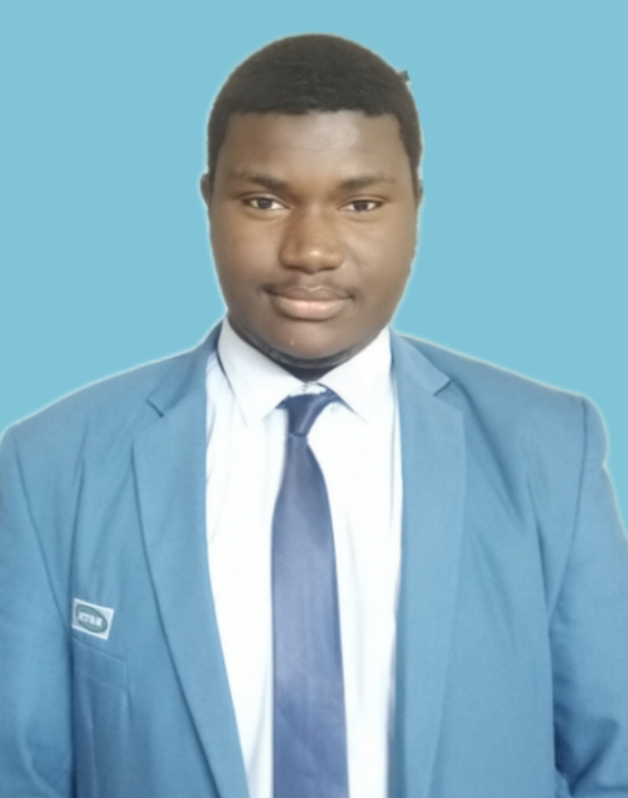

DÉVELOPPEUR & CRÉATIF

Bonjour, je suis Souleymane Faye
Souleymane Faye étudiant en deuxième année de Génie logiciel Administration Réseau communément appelé GLAR à l'ESTM. Je suis originaire de Thiès. Personnellement mes objectifs professionnels se limite à la pratique de mon savoir faire. En effet je souhaite exceller dans un métier qui me passionne et qui me donnera un challenge constant. Si possible dans un Métier qui me permettra de contribuer au bien être des autres. L'informatique me passionne depuis ma tendre enfance car c'est une filière où tu pourras apprendre par toi même et mettre en pratique toutes les théories. La partie créative est celle qui me passionne le plus le coding, le developpement web le graphisme. Ce qui me distingue des autres ce sont d'abord mes qualités humaines tels que mon écoute, mon intelligence émotionnelle, mon perfectionnisme, mon esprit d'equipe et ma persévérance.